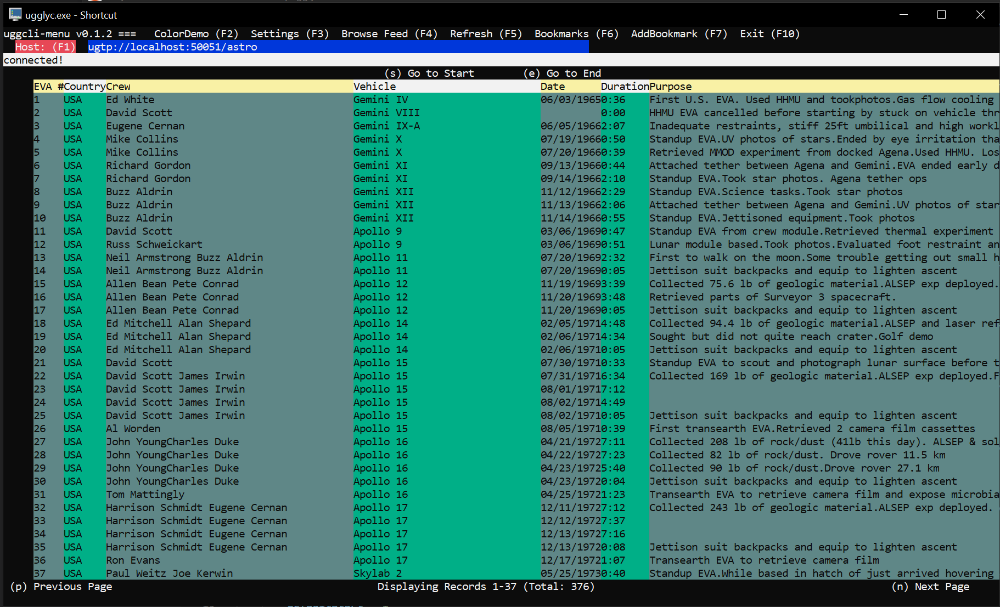

Uggly is a means to generate Terminal User Interfaces in a client-server architecture. Think of it as TUI over-the-wire (TUIOW). The client requests content from the server via gRPC protobuffers and the client handles rendering of that content. The server is sending "pages" of content one screen at a time. The protocol and page definitions take inspiration from CSS/HTML in that there are constructs such as DivBoxes, TextBlobs, Links, and Forms for example. It is opinionated in that only keyboard strokes are supported for link navigation.
There is a client compiled for Windows, Linux, and Mac. Servers can be written in any language that supports gRPC and protobuf (e.g, Go, Python, Java, etc.) and honors the uggly protocol. New clients could be written in other languages similar to the way that there are multiple web browsers today a la Firefox, Chrome, Edge, etc.
|

Windows Client running in Powershell terminal window connected to a python server displaying a dynamic table. |
Windows Client running in Powershell terminal window connected to a Golang server handling a login workflow |
There is no doubt that GUI's are useful. For instance, there's no better way to interact with some systems than being able to see data in a tabular format. Today, if someone wants to write a GUI they have to use Web languages and view it in a browser or use desktop UI toolkits such as Qt, Swift, etc. Web apps are the most accessible because almost everyone already has a web browser but they're not always the best UX design and are often bloated and slow. Desktop apps are fast and highly optimized for their single-purpose (keyboard shortcuts are amazing) but less accessible because you have to download an app for every UI you want to use.
So if you're a developer and you're trying to share a UI with your users you're in a predicament. Do you put your time into a Web app or a Desktop app? Either of these options are non-trivial because despite their ubiquitous nature, they have steep learning curves and are often overkill for simple tasks.
Terminal User Interfaces have been around for a long time. They were quite common in the early days of desktop computing so they're nothing new or terribly novel. There's actually been a resurgence in TUI's over the past few years as people look for something simpler and more novel. The efficiencies that can be had when UI's are designed for use with a keyboard only are pretty incredible--never underestimate the power of human muscle memory. However, they're still essentially a desktop application--just like the Qt and Swift applications the users have to download the application when they want to use the UI. This makes them essentially a novelty because nobody is going to build any serious TUI because they would only have a limited number of users who would use it.
What if there was something that took some of the best of both worlds? The accessibility and flexibility of the browser and the efficiency of the TUI. This is what the uggly protocol is experimenting with. Offload the client side rendering of the TUI to the "browser" and let server developers focus on building "web apps" using concepts that they're familiar with (components, links, cookies, etc.). That way the end-users only have to download one client that lets them access any number of applications. Multi-platform support is built into the concept because every major operating system has a terminal.
There are no doubts that this will never really take off because right out of the gate it has no images, no mobile support and it's still highly unlikely that many people will opt to write a server-side TUI app instead of a web app. However, maybe making it a little bit easier could help make TUI's more ubiquitous. In any case, TUI's are a lot of fun to use and they can also be fun to write.
ugtps://ttt.bytester.net:443/login- This is a site that demonstrates the platform's abilities at handling sessions and cookies similar to an HTTP browser. This server is written in golang and the code for this demo can be found here.
ugtps://ttt.bytester.net:1443/astro- This is a site that demonstrates how you can scroll through large amounts of dynamic content using keystrokes. This server is written in python and the code for the demo can be found here.
It's kind of like a how a browser requests a page from a web server except that it's using a different protocol than HTML. They key difference is that there is no client side code (e.g., Javascript) and each screen that a user sees is generated on-demand by the server when the client makes the request. For, example, content that exceeds the size of the client's screen should be broken up into multiple pages by the server. Also, the server dictates what key-presses are available for link actions.
The below diagram may offer a better explanation:
uggly Protocol Basic Concept (pseudocode)
Client
┌─────────────────────────┐ Server
│ (generates PageRequest) │ ┌────────────────────────────────────────────────┐
│ ┌─────────────────────┐ │ ┌────────────┤► (processes PageRequest │
│ │PageRequest{ │ │ │ │ │ ▼ │
│ │ Name: home, │ │ │ │ ▼ │
│ │ Server: tui.app.com,│ │ │ │ (generates PageResponse) │
│ │ Port: 8888} │ │ │ │ ┌───────────────────────────────────────────┐ │
│ └─────────────────────┘ │ gRPC │ │ │PageResponse{ │ │
│ GetPage(PageRequest) ├─────────────┘ │ │ Name: home, │ │
└─────────────────────────┘ │ │ DivBoxes: [div1=(x,y,height,width,color)]│ │
│ │ Elements: [ │ │
┌──────────────────────────────┐ gRPC │ │ TextBlobs: [text1, text2], │ │
│ (processes PageResponse) ◄──┼─────────────────────┼─┤ Forms: [form1], │ │
│ │ │ │ │ ], │ │
│ ▼ │ │ │ KeyStrokes: [ │ │
│ (renders components, sets │ │ │ "n" => page:news, │ │
│ cookies, polls for │ │ │ "a" => page:about, │ │
│ provided keystrokes) │ │ │ ], │ │
│ │ │ │ Cookies: [theme: "dark"], │ │
│ ┌────────────────────────┐ │ │ │ } │ │
│ │┼──────────────────────┼│ │ │ └───────────────────────────────────────────┘ │
│ ││ ││ │ │ │
│ ││ ┌──┐ ┌───┐ ┌───────┐ ││ │ └────────────────────────────────────────────────┘
│ ││ └──┘ └───┘ └───────┘ ││ │
│ ││ ││ │
│ │┼──────────────────────┼│ │
│ └────────────────────────┘ │
│ │
│ (key press generates new │
│ PageRequest, repeat │
│ process) │
│ │
│ │
└──────────────────────────────┘
Since there is already an existing client that you can use it may be more helpful to just talk about how one writes a server.
The only way to get more great TUI's is to have more people write more of them. I tried to make authoring servers easy and it can be a lot of fun once you get into it. There's something refreshing about using simple building blocks that are easy to understand that make for a very satisfying end product.
If you're familiar with gRPC then building servers should be fairly straightforward. Both the Python an Go starter guides from grpc.io were used to form the base of the following sections. If you prefer to write servers in a different language then the uggly protobuf will be your only guide.
If you're just getting started I would recommend writing in Python. The flexibility makes for much easier content generation and for server side you don't have to worry about the distribution and dependency problems.
For Python, start with the python sample hello world.
For Golang, start with the go sample hello world.
The initial hurdle of writing uggly servers is understanding the core concepts and that is mostly language agnostic. This section will be all about understanding the basics, core design principles, and tips and tricks.
The heart of every server is the `GetPage` handler which accepts `PageRequest` and returns `PageResponse`. Let's take a look at an excerpt from the docs of a `PageRequest`
|
A PageRequest contains the name of the desired page and some metadata about the cient height and width. The server can choose to ignore the width and height if it insists on statically sized content. Also, the server could generate a PageResponse saying something like "this server insists on a minimum height to view content" for example.
|
You'll need some sort of compute for hosting as there's not many ways to host a gRPC server in a "serverless" fashion. Supposedly on GCP you can do it with Cloud Run but on traditional hosting or on AWS this means hosting on some sort of server or container. For AWS this is EC2, EKS, ECS, etc. AWS Application Load Balancers (ALB) support gRPC, so that's nice.
Docker is a good solution so you don't have to mess around with systemd wrappers, etc. The above demo sites (e.g., 'ugtps://ttt.bytester.net:443') are hosted on AWS ECS behind an ALB using the ECS native Blue/Green deployment with CodeDeploy. The actual hosting of the gRPC server was easy but the ECS bits with CodeDeploy were needlessly complex, IMO. Here is what the architecture looks like.
Uggly Server Hosting on AWS ECS
┌──────────────────────────┐
│ Route53 │
│ │
│ ttt.bytester.net │
└───────────┬──────────────┘
│
┌─────────────────────────────┼──────────────────────────────┐
│ EC2 │ │
│ ┌─────────────────▼──────────────────────┐ │
│ │ ALB │ │
│ │ SSL SSL │ │
│ │ Listener Listener │ │
│ │ TCP 443 TCP 1433 │ │
│ │ │ │
│ └──┬─────────────────────────────┬───────┘ │
│ │ │ │
│ ┌───────────▼────────┐ ┌──────────▼─────────┐ │
│ │ Target Group gRPC │ │ Target Group gRPC │ │
│ │ │ │ │ │
│ │ │ │ │ │
│ └────────┬───────────┘ └───────────┬────────┘ │
│ │ │ │
└───────────┼─────────────────────────────────┼──────────────┘
│ │
│ │
│ │
┌──────────────────┼─────────────────────────────────┼───────────────────┐
│ ECS Fargate │ │ │
│ │ │ │
│ │ │ │
│ ┌─────────▼────────────┐ ┌───────▼──────────────┐ │
│ │ uggly-server-login │ │ puggly-server │ │
│ │ (go container) │ │ (python container) │ │
│ │ TCP 80 │ │ TCP 50051 │ │
│ └──────────────────────┘ └──────────────────────┘ │
│ │
└────────────────────────────────────────────────────────────────────────┘